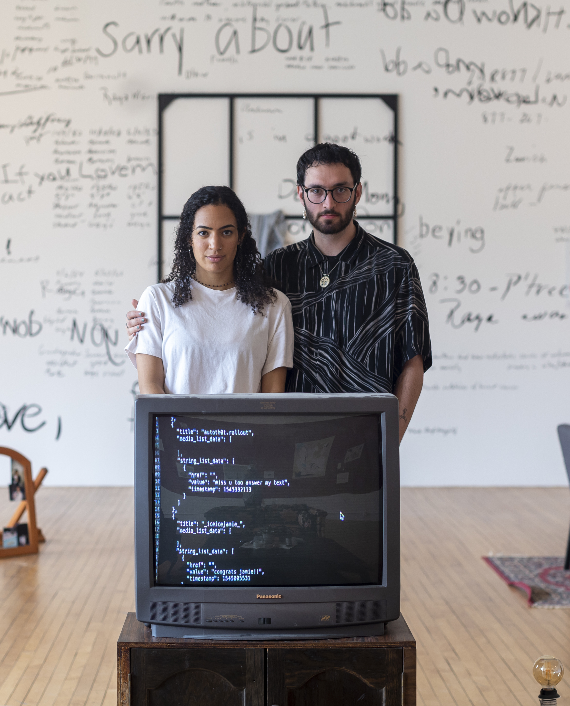

tomorrow soup is an artistic collaboration consisting of Raya Ward and Kyle Barnes, two young humans meandering and making at the intersections of technology, ecology and society.
tomorrow soup‘s work explores concepts such as play, climate consciousness, speculative futures, privacy/surveillance/data, ecology, justice, and tech ethics. They take inspiration from ecofeminist methodologies, speculative design practices, and critical HCI lenses. The duo’s work takes many forms including new media art, community events, web installations, writing, and graphic design.
*
kyle barnes (he/him) likes to make things with his friends. these things may include: websites, sculptures, songs, gatherings, collages, essays, performances, games, prints, or some combination therein. he’s started companies and won figure skating competitions and published HCI papers and more, but he spends most of his time trying to live well on a dying planet.
→
*
raya ward (she/her) is an interdisciplinary artist and designer based in los angeles. she has a background in human computer interaction and visual arts. recently, she's been making a lot of diaries out of her's and other’s legal, digital, and personal data artifacts. in the past she has designed with teams at apple and georgia tech and cofounded an ed-tech startup that she led for two years. she generally prefers to be in the water than on land.
→
For questions, collaborations, or comments, please email the studio tomorrowsoupstudio@gmail.com